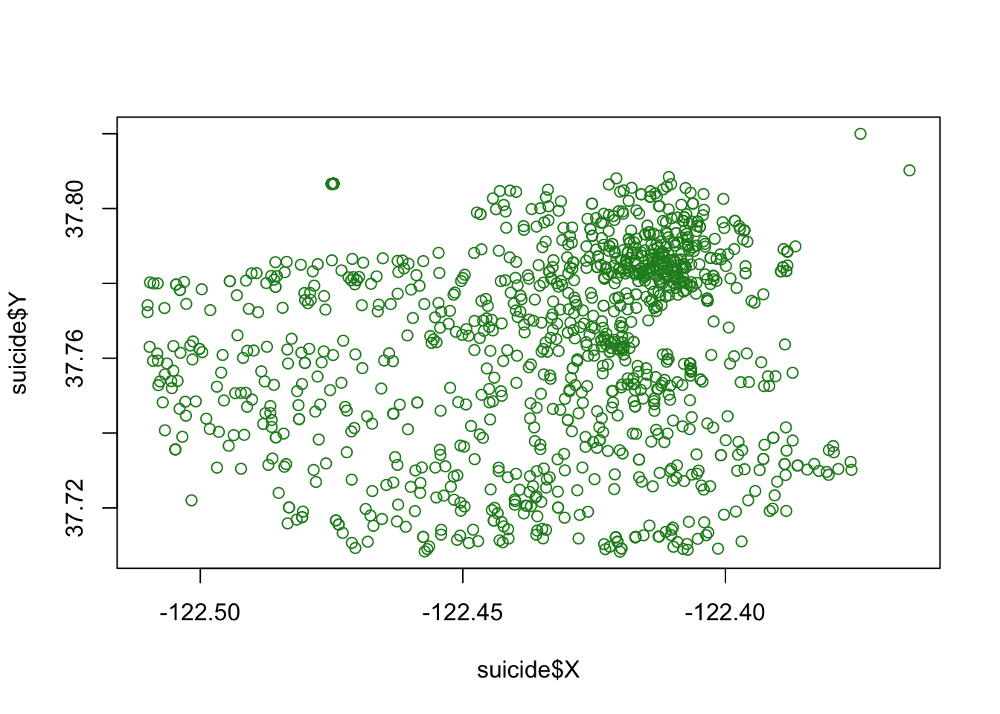
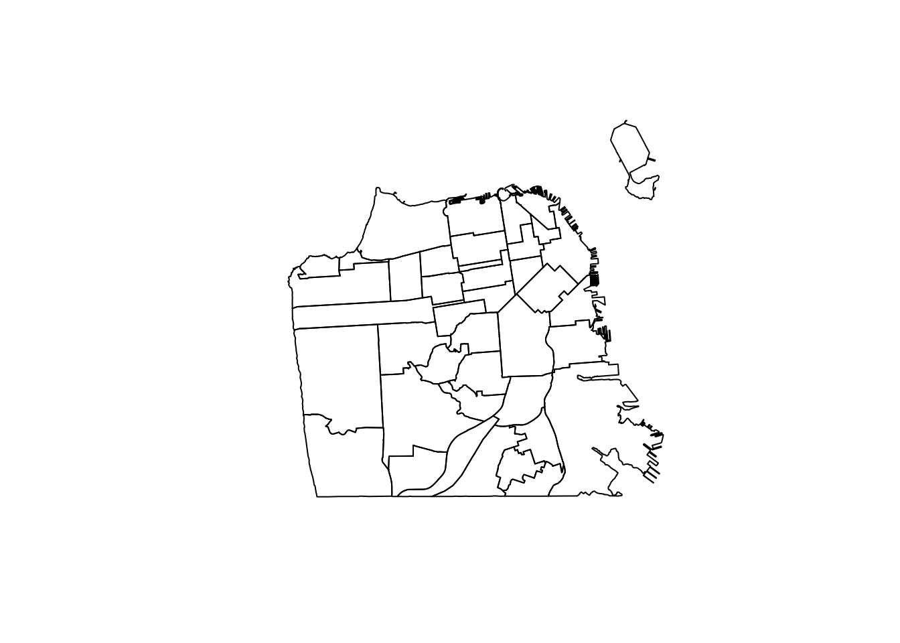
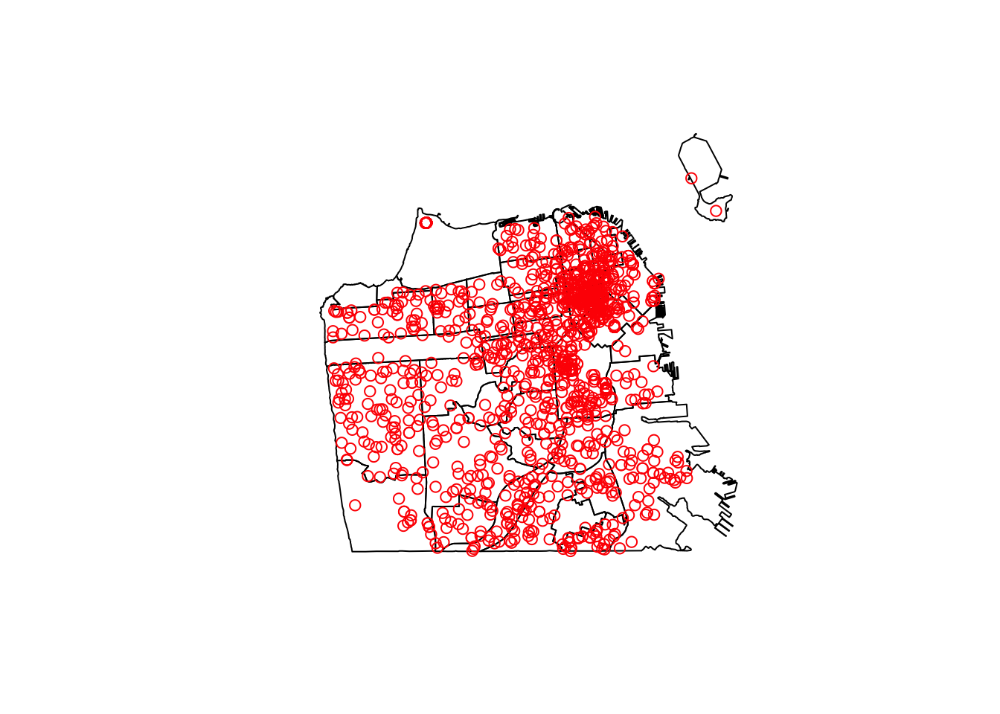
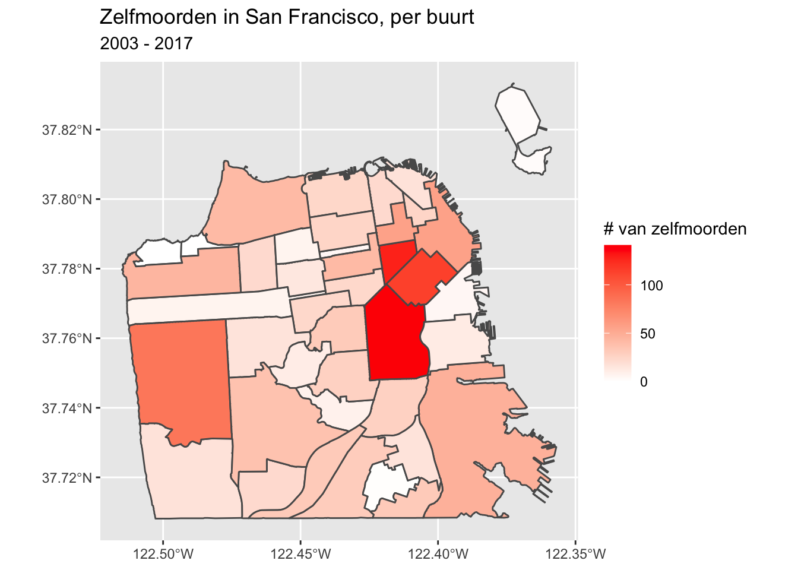
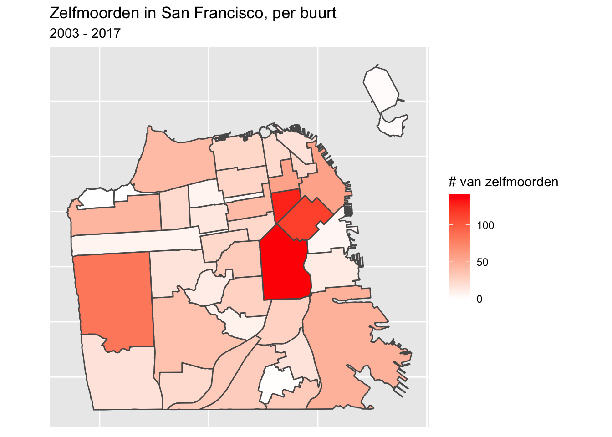
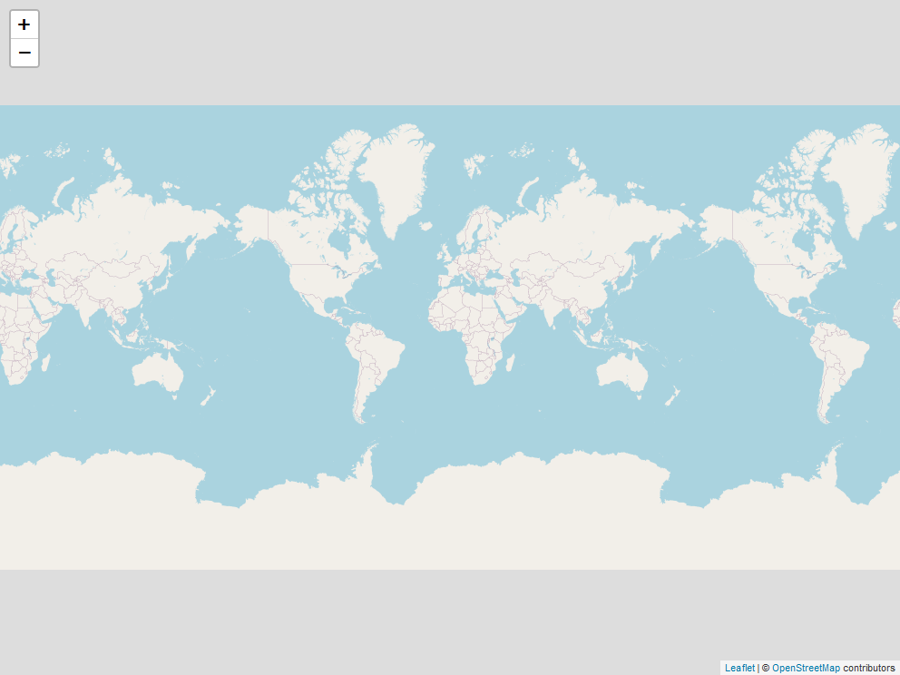
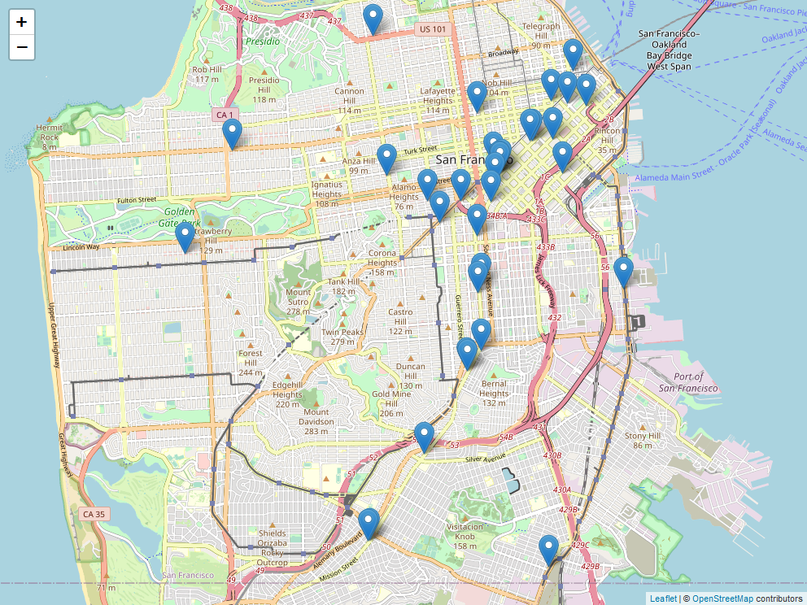
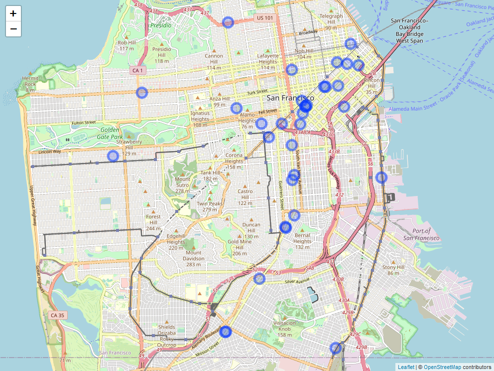
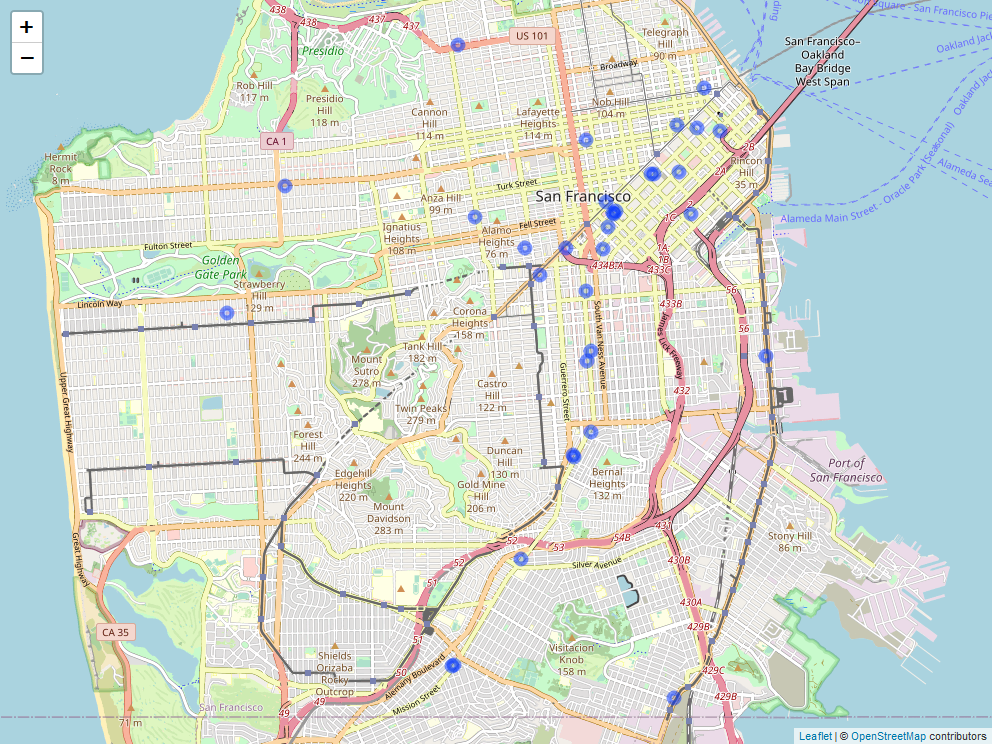

Visualisaties met hotspot, choropleth en interactieve kaarten
visualisatie
communicatie
Author
Jacob Kap, bewerking HarrieJonkman
Published
November 13, 2022
Inleiding
Jacob Kap schreef het boek Crime by the numbers: A Criminologist’s Guide to R. Het is uitgegeven door CRC Press in de R Series. Hij introduceert hiermee een inleidend boek werken met R voor criminologiestudenten. De hoofdstukken over hotspotkaarten, choropleth kaarten en interactieve kaarten vond ik zeer verhelderend. Met zijn uitleg, syntaxen en data kon ik dit zelf uitvoeren. Ik heb in deze Nederlands talige blog verwerkt. Zijn materialen vind je hier.
Hotspot kaarten
Hier gebruiken de file met zelfmoorddata van San Fransisco in de periode 2003-2018, die je ook op github kunt vinden hier: san_francisco_suicide_2003_2017.csv.
Hotspotkaarten worden gebruikt om na te gaan waar gebeurtenissen of plekken (bv. misdrijven, marihuana dispensaria, drankwinkels) bijzonder vaak voorkomen. Deze kaarten worden vaak gebruikt door politiediensten, in het bijzonder om te bepalen waar de hotspotpolitie moet optreden (waarbij patrouilles worden toegespitst op gebieden met hoge criminaliteit).
Er zijn echter belangrijke gebreken aan dit soort kaarten. Zoals we in deze les zullen zien, kunnen kleine veranderingen in de manier waarop we de kaarten maken aanzienlijke verschillen in interpretatie veroorzaken. Bijvoorbeeld, het bepalen van de grootte van de clusters die de hotspots vormen, kan het doen lijken alsof er veel grotere of kleinere gebieden met hotspots zijn dan in werkelijkheid het geval is.
Deze clusters zijn ook vrij willekeurig getekend, zonder rekening te houden met context zoals buurten (straks zullen we kaarten maken die proberen rekening te houden met dit soort gebieden). Dit maakt de interpretatie ervan moeilijker, want ook al geven kaarten ons de context van de locatie, ze kunnen verschillende gebieden op een willekeurige manier combineren. Hotspotkaarten worden ook vaak bevolkingskaarten genoemd, waarbij de stippen aangeven waar mensen wonen in plaats van waar het risico van iets is. Zo zal een straat met verschillende appartementsgebouwen waarschijnlijk meer misdrijven hebben (en dus meer stippen op een hotspotkaart) dan een straat met alleen eengezinswoningen. Misschien is dat omdat de flatstraat echt meer criminaliteit kent dan de eengezinswoningstraat, maar het kan ook gewoon zijn dat plaatsen met meer mensen meer gebeurtenissen kennen (bv. misdrijven, zelfmoorden, enz.), ook al is het aantal van die gebeurtenissen lager dan in minder bevolkte plaatsen. Dus als men de context van een gebied niet kent, kunnen hotspotkaarten zeer misleidend zijn. We zullen hier verder ingaan op deze kwesties, maar houd rekening met deze risico’s wanneer je jouw eigen hotspotkaarten maakt.
Hier zullen we hotspotkaarten maken aan de hand van gegevens over zelfmoorden in San Francisco tussen 2003 en 2017. Eerst moeten we de gegevens inlezen, die “san_francisco_suicide_2003_2017.csv” heten. We kunnen het object dat we maken de naam suicide geven.
Rows: 1292 Columns: 14
── Column specification ────────────────────────────────────────────────────────
Delimiter: ","
chr (8): Category, Descript, DayOfWeek, Date, PdDistrict, Resolution, Addre...
dbl (5): IncidntNum, X, Y, PdId, year
time (1): Time
ℹ Use `spec()` to retrieve the full column specification for this data.
ℹ Specify the column types or set `show_col_types = FALSE` to quiet this message.
suicide <-as.data.frame(suicide)
Deze gegevens bevatten informatie over elk in San Francisco gemeld misdrijf, inclusief het soort misdrijf (in ons geval altijd zelfmoord), een meer gedetailleerde misdaadcategorie, en een aantal datum- en locatievariabelen. Merk op dat zelfmoord eigenlijk geen misdaad is, ook al is het opgenomen in de misdaadgegevens van de politie van San Francisco. Zo zijn er een aantal andere niet-misdrijven opgenomen, zoals “Brandmelding”, “Verkeersongeluk” en “Niet-crimineel”. Dit komt vrij vaak voor bij “misdaad”-gegevens, waarin ook niet-misdrijven zijn opgenomen waarop de politie in het algemeen reageert, dus het is belangrijk jouw gegevens zorgvuldig te onderzoeken om te zien wat er is opgenomen. Het simpelweg optellen van de rijen als maatstaf voor criminaliteit zal over het algemeen het aantal misdrijven overschrijden.
De kolommen X en Y zijn onze lengte- en breedtegraden, die we zullen gebruiken om de gegevens in kaart te brengen.
head(suicide)
IncidntNum Category Descript DayOfWeek Date
1 180318931 SUICIDE ATTEMPTED SUICIDE BY STRANGULATION Monday 04/30/2018
2 180315501 SUICIDE ATTEMPTED SUICIDE BY JUMPING Saturday 04/28/2018
3 180295674 SUICIDE SUICIDE BY LACERATION Saturday 04/21/2018
4 180263659 SUICIDE SUICIDE Tuesday 04/10/2018
5 180235523 SUICIDE ATTEMPTED SUICIDE BY INGESTION Friday 03/30/2018
6 180236515 SUICIDE SUICIDE BY ASPHYXIATION Thursday 03/29/2018
Time PdDistrict Resolution Address X Y
1 06:30:00 TARAVAL NONE 0 Block of BRUCE AV -122.4517 37.72218
2 17:54:00 NORTHERN NONE 700 Block of HAYES ST -122.4288 37.77620
3 12:20:00 RICHMOND NONE 3700 Block of CLAY ST -122.4546 37.78818
4 05:13:00 CENTRAL NONE 0 Block of DRUMM ST -122.3964 37.79414
5 09:15:00 TARAVAL NONE 0 Block of FAIRFIELD WY -122.4632 37.72679
6 17:30:00 RICHMOND NONE 300 Block of 29TH AV -122.4893 37.78274
Location PdId year
1 POINT (-122.45168059935614 37.72218061554315) 1.803189e+13 2018
2 POINT (-122.42876060987851 37.77620120112792) 1.803155e+13 2018
3 POINT (-122.45462091999406 37.7881754224736) 1.802957e+13 2018
4 POINT (-122.39642194376758 37.79414474237039) 1.802637e+13 2018
5 POINT (-122.46324153155875 37.72679184368551) 1.802355e+13 2018
6 POINT (-122.48929119750689 37.782735835121265) 1.802365e+13 2018
Een eenvoudige kaart
Om deze kaarten te maken gebruiken we het pakket ggmap.
# Harrie: alleen installeren als je het pakket nog niet hebt#| eval: false#install.packages("ggmap")
library(ggmap)
Loading required package: ggplot2
Google's Terms of Service: https://cloud.google.com/maps-platform/terms/.
Please cite ggmap if you use it! See citation("ggmap") for details.
We beginnen met het maken van de achtergrond van onze kaart, die San Francisco laat zien. Dat doen we met de get_map() functie van ggmap, die een kaartachtergrond krijgt van een aantal bronnen. We stellen de bron in op “stamen”, omdat Google ons niet langer toestaat een kaart te krijgen zonder een account aan te maken. De eerste parameter in get_map() zijn simpelweg coördinaten voor de bounding box van San Francisco om er zeker van te zijn dat we een kaart van de juiste plek krijgen. Een bounding box bestaat uit vier coördinaten die samen een rechthoek vormen en wordt gebruikt om te bepalen waar in de wereld de kaart wordt getoond.
Een gemakkelijke manier om de vier coördinaten voor een bounding box te vinden is naar de site Bounding Box. Deze site heeft een kaart van de wereld en een box op het scherm. Verplaats de doos naar het gebied waarvan u de kaart wilt hebben. Misschien moet u de grootte van de doos aanpassen om het gebied dat u wilt te bedekken. Verander dan in het gedeelte “Kopiëren en plakken” de dropdown box in “CSV”. In de sectie rechts hiervan staan de vier getallen die de bounding box vormen. Je kunt die nummers kopiëren in get_map().
Omdat we de kaartuitvoer hebben opgeslagen in sf_map kunnen we deze kaartachtergrond hergebruiken voor alle kaarten die we maken. Dit bespaart ons tijd, omdat we niet elke keer hoeven te wachten om de kaart te downloaden. Laten we de zelfmoorden uit onze dataset plotten. Net als bij een scatterplot gebruiken we de geom_point() functie uit het ggplot2 pakket en zetten we onze lengte- en breedtegraad variabelen op respectievelijk de x- en y-as. Wanneer we ggmap laden, wordt ook automatisch ggplot2 geladen, omdat dat pakket nodig is om ggmap te laten werken, zodat we zelf geen library(ggplot2) hoeven te doen.
sf_map +geom_point(aes(x = X, y = Y),data = suicide)
Voor kaarten als deze - met één punt per gebeurtenis - is het moeilijk te zien of er gebeurtenissen plaatsvinden op dezelfde, of bijna dezelfde, plaats, aangezien elk punt ononderbroken groen is. We willen de punten semi-transparant maken, zodat als er meerdere zelfmoorden plaatsvinden op dezelfde plaats, dat punt donkerder wordt gearceerd dan wanneer er slechts één zelfmoord plaatsvond. Daarvoor gebruiken we de parameter alpha = die een waarde tussen 0 en 1 aanneemt. Hoe lager de waarde, hoe transparanter de stip.
Deze kaart is nuttig omdat ze ons toelaat gemakkelijk te zien waar elke zelfmoord in San Francisco plaatsvond tussen 2003 en 2017. Er zijn echter enkele beperkingen. Zo toont deze kaart alle zelfmoorden in één kaart, wat betekent dat trends in de tijd verloren gaan.
Wat zijn kaarten eigenlijk?
Laten we even stilstaan bij wat een kaart eigenlijk is. Ik heb de volgende eenvoudige scatterplot gemaakt van onze gegevens met één stip per zelfmoord (minus die zonder coördinaten). Vergelijk dit met de vorige kaart en je zult zien dat ze hetzelfde zijn, behalve dat de kaart een nuttige achtergrond heeft, terwijl de plot een lege achtergrond heeft. Dat is alles wat statische kaarten zijn (in het hoofdstuk interactieve kaarten zullen we leren over interactieve kaarten), spreidingskaarten van coördinaten op een achtergrond van een kaart. Eigenlijk zijn het spreidingskaarten met context. En die context is nuttig; we kunnen de kaart interpreteren om te zien dat er bijvoorbeeld veel zelfmoorden zijn in het noordoosten van San Francisco, maar niet zoveel elders. Precies hetzelfde patroon is aanwezig in de scatterplot, maar zonder de mogelijkheid om te vertellen “waar” een stip is.
plot(suicide$X, suicide$Y, col ="forestgreen")

Een hotspotkaart maken
Nu kunnen we beginnen met het maken van hotspotkaarten, die helpen om gebieden met clusters van gebeurtenissen weer te geven. We doen dit met hexagonale bins, een efficiënte manier om clusters van gebeurtenissen op een kaart weer te geven. Onze syntax is vergelijkbaar met de kaart hierboven, maar nu willen we de functie stat_binhex() gebruiken in plaats van geom_point(). Het begint hetzelfde als voorheen met aes(x = X, y = Y) (of hoe de kolommen lengtegraad en breedtegraad ook heten in jouw gegevens), evenals data = suicide buiten de aes() parameter.
Er zijn twee nieuwe dingen die we nodig hebben om de hotspotkaart te maken. Ten eerste voegen we de parameter bins = number_of_bins toe, waarbij “number_of_bins” een getal is dat we kiezen. bins zegt in wezen hoe groot of klein we elk cluster van gebeurtenissen willen hebben. Een kleinere waarde voor bins zegt dat we meer gebeurtenissen geclusterd willen hebben, waardoor grotere bins ontstaan. Een grotere waarde voor bins laat elke bin kleiner zijn op de kaart en minder gebeurtenissen bevatten. Dit zal duidelijker worden met voorbeelden.
Het tweede is het toevoegen van de functie coord_cartesian(), die ggplot() vertelt dat we een ruimtelijke analyse gaan uitvoeren bij het maken van de bins. We hoeven hier geen parameters aan toe te voegen.
Om stat_binhex() te gebruiken, moeten we er ook voor zorgen dat het pakket hexbin geïnstalleerd is. stat_binhex() zal de benodigde functie van hexbin intern aanroepen zodat we library(hexbin) niet hoeven te draaien.
# Wel installeren als je dat nog niet gedaan hebt#| echo: false# install.packages("hexbin")
Laten we beginnen met 60 bins en dan een ander aantal bins proberen om te zien hoe dat de kaart verandert.
Coordinate system already present. Adding new coordinate system, which will replace the existing one.
Uit deze kaart blijkt dat de meeste gebieden in de stad geen zelfmoorden hadden en dat de gebieden met de meeste zelfmoorden in het centrum van San Francisco liggen.
Wat gebeurt er als we het aantal bins verlagen tot 30?
Coordinate system already present. Adding new coordinate system, which will replace the existing one.
Elke bin is veel groter en bestrijkt bijna heel San Francisco. Wees voorzichtig met kaarten als deze! Deze kaart is zo breed dat het lijkt alsof zelfmoorden overal in de stad voorkomen. We weten uit de kaart waarop elke zelfmoord als een stip wordt weergegeven dat er minder dan 1300 zelfmoorden zijn; dit is dus niet waar. Kaarten als deze maken het gemakkelijk om de lezer te misleiden, inclusief jezelf!
Hoe zit het met het kijken naar 100 bins?
Coordinate system already present. Adding new coordinate system, which will replace the existing one.
Nu is elke bin erg klein en een veel kleiner gebied in San Francisco heeft een zelfmoord gehad. Dus wat is het juiste aantal bins om te gebruiken? Hier is geen universeel antwoord op te geven- je moet beslissen wat het doel is van de gegevens die je gebruikt. Dit levert ernstige problemen op voor - al dan niet opzettelijke - manipulatie van de gegevens, aangezien de kaart zo gemakkelijk kan worden gewijzigd zonder dat de gegevens zelf veranderen.
Kleuren
Om de kleuren van de bin te veranderen kunnen we de parameter scale_fill_gradient() gebruiken. Deze accepteert een kleur voor “laag”, wanneer de gebeurtenissen zeldzaam zijn, en “hoog” voor de bakken met frequente gebeurtenissen. We gebruiken kleuren uit ColorBrewer, en selecteren het geel-roodachtige thema (“3-class YlOrRd”) uit de Multi-hue sectie van het “sequentiële” gegevensgedeelte van de pagina.
Hieronder maken we gebruik van enkele bestanden die je hier kunt vinden:
san_francisco_suicide_2003_2017.csv, san_francisco_neighborhoods.dbf, san_francisco_neighborhoods.prj, san_francisco_neighborhoods.shp, san_francisco_neighborhoods.shx.
We hebben hotspot-kaarten gemaakt om te laten zien in welke gebieden in San Francisco de meeste zelfmoorden plaatsvonden. We maakten de kaarten op verschillende manieren en stelden steeds vast dat zelfmoorden het meest voorkwamen in het noordoosten van San Francisco. In dit hoofdstuk gaan we choropleth-kaarten maken, dat zijn gearceerde kaarten waarbij elke “eenheid” een bekend geografisch gebied is, zoals een staat of een buurt. Denk aan verkiezingskaarten waar staten blauw gekleurd zijn als een Democratische kandidaat die staat wint en rood als een Republikeinse kandidaat wint. Dit zijn choropletkaarten - elke staat is gekleurd om iets aan te geven. Hier zullen we verder werken aan de zelfmoordgegevens en choropleth-kaarten maken, gearceerd door het aantal zelfmoorden in elke buurt (we definiëren dit later in het hoofdstuk) in de stad.
Omdat we meer gaan werken aan de zelfmoordgegevens van San Francisco, laten we die nu inlezen, als we dat nog niet hebben gedaan.
Rows: 1292 Columns: 14
── Column specification ────────────────────────────────────────────────────────
Delimiter: ","
chr (8): Category, Descript, DayOfWeek, Date, PdDistrict, Resolution, Addre...
dbl (5): IncidntNum, X, Y, PdId, year
time (1): Time
ℹ Use `spec()` to retrieve the full column specification for this data.
ℹ Specify the column types or set `show_col_types = FALSE` to quiet this message.
suicide <-as.data.frame(suicide)
Het pakket dat we zullen gebruiken om geografische gegevens te verwerken en het meeste werk in dit hoofdstuk te doen is sf. sf is een geavanceerd pakket en doet veel meer dan wat we in dit hoofdstuk behandelen. Voor meer informatie over de mogelijkheden van het pakket zie de website ervoor hier.
# wel installeren als je het nog niet hebt#| eval: false#install.packages("sf")
library(sf)
Linking to GEOS 3.10.2, GDAL 3.4.2, PROJ 8.2.1; sf_use_s2() is TRUE
Voor dit deel moeten we een shapefile inlezen dat de grenzen van elke buurt in San Francisco weergeeft. Een shapefile is vergelijkbaar met een data.frame, maar bevat informatie over hoe een geografische grens zoals een staat moet worden getekend. De manier waarop sf de shapefiles inleest is via de st_read() functie. Onze invoer binnen de () is een string met de naam van het “.shp” bestand dat we willen inlezen (omdat we R vertellen een bestand op de computer te lezen in plaats van een bestaand object, moet het tussen aanhalingstekens staan). Dit shapefile bevat wijken in San Francisco, dus noemen we het object sf_neighborhoods.
Ik heb deze gegevens gedownload van San Francisco’s Open Data site hier, door het Shapefile formaat te selecteren in de Export tab. Als je dat zelf doet, krijg je een zip-bestand met meerdere bestanden erin. Dit is normaal bij shapefiles, je hebt meerdere bestanden en leest alleen het bestand met de extensie “.shp” in in R. We hebben nog steeds wel alle bestanden nodig, en st_read() gebruikt ze, zelfs als ze niet expliciet worden aangeroepen. Zorg er dus voor dat elk gedownload bestand in dezelfde werkdirectory staat als het .shp-bestand. De bestanden van deze site hadden moeilijk te lezen bestandsnamen, dus heb ik ze allemaal hernoemd als “san_francisco_neighborhoods”, hoewel dat er niet toe doet als ze eenmaal in R zijn ingelezen.
De laatste kolom is belangrijk. In shapefiles is de kolom “geometrie” de kolom met de instructies om de kaart te maken. Deze gegevens hebben een enkele rij voor elke buurt in de stad. Dus de kolom “geometrie” heeft in elke rij een lijst met coördinaten, die, als ze in volgorde worden verbonden, die buurt vormen. Aangezien de kolom “geometrie” de instructies bevat om een kaart te maken, kan plot() deze kolom gebruiken om een kaart van de gegevens te tonen.
plot(sf_neighborhoods$geometry)

Hier hebben we een kaart van San Francisco opgedeeld in buurten. Is dit een perfecte weergave van de wijken in San Francisco? Nee. Het is gewoon een poging van de stad om definities van buurten te maken. Waarschijnlijk zult u merken dat gebieden op de grens van buurten meer op elkaar lijken dan op gebieden aan de andere kant van hun aangewezen buurt. Je kunt hier een beetje lezen over hoe San Francisco de buurtgrenzen heeft bepaald hier, maar weet dat dit, zoals alle geografische gebieden die iemand heeft aangewezen, een zekere mate van onnauwkeurigheid en willekeur in zich heeft. Zoals wel vaker is dit gewoon weer een beperking waar we rekening mee moeten houden.
In de head() resultaten was er een sectie over iets dat “epsg” en “proj4string” heet. Laten we het daar specifiek over hebben, aangezien ze belangrijk zijn voor het werken met ruimtelijke gegevens.
Een probleem bij het werken met geografische gegevens is dat de aarde niet plat is. Aangezien de aarde bolvormig is, zal er altijd enige vervorming optreden wanneer we proberen de gegevens uit te zetten op een plat vlak zoals een kaart. Om hiermee rekening te houden, moeten we de lengte- en breedtegraden die we hebben omzetten zodat ze goed werken op een kaart. Dat doen we door onze gegevens te “projecteren” op de gebieden van de aarde die we willen. Dit is een complex gebied waaraan veel werk is besteed (zowel abstract als specifiek voor R), dus hier zal een uiterst beknopt overzicht geven van het onderwerp en sommige aspecten ervan te veel vereenvoudigen.
Als we kijken naar de uitvoer van st_crs(sf_neighborhoods) zien we dat het EPSG is ingesteld op 4326 en de proj4string (die ons de huidige kaartprojectie vertelt) is “+proj=longlat +datum=WGS84 +no_defs”. Deze CRS, WGS84, is een standaard CRS en wordt gebruikt wanneer u een GPS gebruikt om een locatie te vinden. Om de CRS voor bepaalde delen van de wereld te vinden, zie hier. Als je op die site zoekt naar “Californië”, zult u zien dat Californië in 6 zones is onderverdeeld. De site is niet erg behulpzaam bij het bepalen van de zones, maar met wat Googelen kun je vaak kaarten van staten of regio’s vinden waarop de zones staan afgebeeld. Wij willen Californië zone 3, die de EPSG-code 2227 heeft. We gebruiken deze code om deze gegevens goed te projecteren.
Als we de proj4string voor 2227 willen, kunnen we st_crs(2227) uitvoeren. Ik voer het hier niet uit omdat het een grote hoeveelheid tekst zal afdrukken, maar je zou het op je eigen computer moeten uitvoeren. Merk op dat de tekst in deze uitvoer “US survey foot” bevat. Dit betekent dat de eenheden in ‘feet’ zijn. Sommige projecties hebben eenheden in meters, dus houd hier rekening mee als je een analyse uitvoert, zoals kijken of een punt binnen X voet van een bepaald gebied ligt.
Laten we onze sf_neighborhoods gegevens omzetten naar coördinaatreferentiesysteem 2227 met st_transform().
Wat we met deze buurten willen doen is uitzoeken in welke buurt elke zelfmoord plaatsvond en het aantal zelfmoorden per buurt optellen. Zodra we dat gedaan hebben, kunnen we een kaart maken op buurtniveau en het aantal zelfmoorden per buurt meten. Een ruimtelijke verbinding (spatial join) lijkt sterk op gewone verbindingen waarbij we twee datasets samenvoegen op basis van gemeenschappelijke variabelen (zoals de naam van de staat of de unieke ID-code van een persoon). In dit geval voegt het samen op basis van een gedeeld geografisch kenmerk, als twee lijnen elkaar snijden of (zoals we hier zullen doen) als een punt binnen een bepaald geografisch gebied ligt.
Op dit moment staan onze suïcide gegevens in een data.frame met wat informatie over elke zelfmoord en de lengte- en breedtegraad van de zelfmoord in aparte kolommen. We willen dit data.frame omzetten in een ruimtelijk object zodat we kunnen vinden in welke buurt elke zelfmoord plaatsvond. We kunnen het omzetten in een ruimtelijk object met behulp van de st_as_sf() functie van sf. Onze invoer is eerst onze data, suïcide. Dan zetten we in de coords parameter een vector van de kolomnamen zodat de functie weet welke kolommen de lengte- en breedtegraad zijn zodat hij die kolommen kan converteren naar een “geometrie” kolom zoals we eerder zagen in sf_neighborhoods. We stellen de CRS in op de WGS84-standaard die we eerder zagen, maar we passen hem aan aan de CRS van de buurtgegevens.
We willen onze zelfmoordgegevens in dezelfde projectie als de buurtgegevens, dus moeten we st_transform() gebruiken om de projectie te veranderen. Aangezien we willen dat de CRS dezelfde is als in sf_neighborhoods, kunnen we deze instellen met st_crs(sf_neighborhoods) om de juiste CRS te gebruiken.
Nu kunnen we er naar kijken met head() om te zien of het is geprojecteerd.
head(suicide)
Simple feature collection with 6 features and 12 fields
Geometry type: POINT
Dimension: XY
Bounding box: xmin: -122.4893 ymin: 37.72218 xmax: -122.3964 ymax: 37.79414
Geodetic CRS: WGS84(DD)
IncidntNum Category Descript DayOfWeek Date
1 180318931 SUICIDE ATTEMPTED SUICIDE BY STRANGULATION Monday 04/30/2018
2 180315501 SUICIDE ATTEMPTED SUICIDE BY JUMPING Saturday 04/28/2018
3 180295674 SUICIDE SUICIDE BY LACERATION Saturday 04/21/2018
4 180263659 SUICIDE SUICIDE Tuesday 04/10/2018
5 180235523 SUICIDE ATTEMPTED SUICIDE BY INGESTION Friday 03/30/2018
6 180236515 SUICIDE SUICIDE BY ASPHYXIATION Thursday 03/29/2018
Time PdDistrict Resolution Address
1 06:30:00 TARAVAL NONE 0 Block of BRUCE AV
2 17:54:00 NORTHERN NONE 700 Block of HAYES ST
3 12:20:00 RICHMOND NONE 3700 Block of CLAY ST
4 05:13:00 CENTRAL NONE 0 Block of DRUMM ST
5 09:15:00 TARAVAL NONE 0 Block of FAIRFIELD WY
6 17:30:00 RICHMOND NONE 300 Block of 29TH AV
Location PdId year
1 POINT (-122.45168059935614 37.72218061554315) 1.803189e+13 2018
2 POINT (-122.42876060987851 37.77620120112792) 1.803155e+13 2018
3 POINT (-122.45462091999406 37.7881754224736) 1.802957e+13 2018
4 POINT (-122.39642194376758 37.79414474237039) 1.802637e+13 2018
5 POINT (-122.46324153155875 37.72679184368551) 1.802355e+13 2018
6 POINT (-122.48929119750689 37.782735835121265) 1.802365e+13 2018
geometry
1 POINT (-122.4517 37.72218)
2 POINT (-122.4288 37.7762)
3 POINT (-122.4546 37.78818)
4 POINT (-122.3964 37.79414)
5 POINT (-122.4632 37.72679)
6 POINT (-122.4893 37.78274)
We zien dat het nu een “simple feature collection” is met de juiste projectie. En we zien dat er een nieuwe kolom “geometrie” is, net als in sf_neighborhoods. Het gegevenstype in “geometrie” is PUNT, aangezien onze gegevens slechts een enkele locatie zijn in plaats van een veelhoek zoals in de buurtgegevens.
Aangezien we zowel de buurt- als de zelfmoordengegevens hebben, maken we snel een kaart om de gegevens te zien.
plot(sf_neighborhoods$geometry)plot(suicide$geometry, add =TRUE, col ="red")

Onze volgende stap is het combineren van deze twee datasets om uit te zoeken hoeveel zelfmoorden er in elke buurt plaatsvonden. Dit wordt een proces in meerdere stappen, dus laten we het eerst plannen. Onze zelfmoordgegevens zijn één rij voor elke zelfmoord; onze buurtgegevens zijn één rij voor elke buurt. Aangezien ons doel is om de gegevens op buurtniveau in kaart te brengen, moeten we de buurt berekenen waar elke zelfmoord plaatsvond en vervolgens aggregeren tot buurtniveau om een telling van de zelfmoorden per buurt te krijgen. Dan moeten we dat combineren met de oorspronkelijke buurtgegevens en kunnen we die in kaart brengen.
Zoek uit in welke buurt elke zelfmoord plaatsvond.
Voeg de zelfmoordgegevens samen tot we een rij per buurt krijgen en een kolom met het aantal zelfmoorden in die buurt.
Combineer met de buurtgegevens
Maak een kaart.
We beginnen met het vinden van de buurt waar elke zelfmoord plaatsvond met behulp van de functie st_join(), een functie in sf. Dit zorgt voor een ruimtelijke verbinding en vindt de polygoon (buurt in ons geval) waarin elk punt zich bevindt. Omdat we de gegevens gaan aggregeren, noemen we de uitvoer van deze functie suicide_agg. De volgorde in de () is belangrijk! Voor onze aggregatie willen we de uitvoer op zelfmoordniveau, dus beginnen we met de suïcide gegevens. In de volgende stap zullen we zien waarom dit van belang is.
suicide_agg <-st_join(suicide, sf_neighborhoods)
Laten we naar de eerste zes rijen kijken.
head(suicide_agg)
Simple feature collection with 6 features and 13 fields
Geometry type: POINT
Dimension: XY
Bounding box: xmin: -122.4893 ymin: 37.72218 xmax: -122.3964 ymax: 37.79414
Geodetic CRS: WGS84(DD)
IncidntNum Category Descript DayOfWeek Date
1 180318931 SUICIDE ATTEMPTED SUICIDE BY STRANGULATION Monday 04/30/2018
2 180315501 SUICIDE ATTEMPTED SUICIDE BY JUMPING Saturday 04/28/2018
3 180295674 SUICIDE SUICIDE BY LACERATION Saturday 04/21/2018
4 180263659 SUICIDE SUICIDE Tuesday 04/10/2018
5 180235523 SUICIDE ATTEMPTED SUICIDE BY INGESTION Friday 03/30/2018
6 180236515 SUICIDE SUICIDE BY ASPHYXIATION Thursday 03/29/2018
Time PdDistrict Resolution Address
1 06:30:00 TARAVAL NONE 0 Block of BRUCE AV
2 17:54:00 NORTHERN NONE 700 Block of HAYES ST
3 12:20:00 RICHMOND NONE 3700 Block of CLAY ST
4 05:13:00 CENTRAL NONE 0 Block of DRUMM ST
5 09:15:00 TARAVAL NONE 0 Block of FAIRFIELD WY
6 17:30:00 RICHMOND NONE 300 Block of 29TH AV
Location PdId year
1 POINT (-122.45168059935614 37.72218061554315) 1.803189e+13 2018
2 POINT (-122.42876060987851 37.77620120112792) 1.803155e+13 2018
3 POINT (-122.45462091999406 37.7881754224736) 1.802957e+13 2018
4 POINT (-122.39642194376758 37.79414474237039) 1.802637e+13 2018
5 POINT (-122.46324153155875 37.72679184368551) 1.802355e+13 2018
6 POINT (-122.48929119750689 37.782735835121265) 1.802365e+13 2018
nhood geometry
1 Oceanview/Merced/Ingleside POINT (-122.4517 37.72218)
2 Hayes Valley POINT (-122.4288 37.7762)
3 Presidio Heights POINT (-122.4546 37.78818)
4 Financial District/South Beach POINT (-122.3964 37.79414)
5 West of Twin Peaks POINT (-122.4632 37.72679)
6 Outer Richmond POINT (-122.4893 37.78274)
Er is nu de kolom nhood van de buurtgegevens, die zegt in welke buurt de zelfmoord plaatsvond. Nu kunnen we aggregeren tot op buurtniveau met de group_by() en summarize() functies uit het dplyr pakket.
We hebben eigenlijk geen variabele met het aantal zelfmoorden, dus die moeten we maken. We kunnen het gewoon number_suicides noemen en het de waarde 1 geven omdat elke rij slechts één zelfmoord is.
suicide_agg$number_suicides <-1
Nu kunnen we de gegevens samenvoegen en de resultaten weer toewijzen aan suicide_agg.
library(dplyr)
Attaching package: 'dplyr'
The following objects are masked from 'package:stats':
filter, lag
The following objects are masked from 'package:base':
intersect, setdiff, setequal, union
Laten we een samenvatting bekijken van de number_suicides variabele die we hebben gemaakt.
summary(suicide_agg$number_suicides)
Min. 1st Qu. Median Mean 3rd Qu. Max.
1.00 13.50 23.50 32.30 37.25 141.00
Het minimum is één zelfmoord per buurt, 32 gemiddeld, en 141 in de buurt met de meeste zelfmoorden. Dus wat maken we van deze gegevens? Nou, er zijn enkele gegeven die problemen veroorzaken. Laten we eens nadenken over de minimumwaarde. Had elke buurt in de stad minstens één zelfmoord? Nee. Kijk eens naar het aantal rijen in deze gegevens, in gedachten houdend dat er één rij per buurt zou moeten zijn.
nrow(suicide_agg)
[1] 40
En laten we het eens vergelijken met de sf_neighborhoods data.
nrow(sf_neighborhoods)
[1] 41
In de gegevens over zelfmoorden ontbreken 2 buurten (een van de 40 waarden ontbreekt en is NA, geen echte buurt). Dat komt omdat als daar geen zelfmoorden plaatsvonden, er nooit een overeenkomstige rij in de gegevens zou zijn, zodat die buurt niet zou voorkomen in de zelfmoordgegevens. Dat zal hier geen groot probleem zijn, maar is iets om in gedachten te houden als dit een echt onderzoeksproject zou zijn.
De gegevens zijn klaar om samen te voegen met de sf_neighborhoods gegevens. We introduceren een nieuwe functie die het samenvoegen van gegevens eenvoudig maakt. Deze functie komt ook uit het pakket dplyr.
left_join(data1, data2)
Deze functie voegt deze gegevens samen en behoudt alle rijen van de linker gegevens en elke kolom van beide gegevenssets. Hij combineert de gegevens op basis van overeenkomende kolommen (overeenkomend betekent dezelfde kolomnaam) in beide gegevenssets. Aangezien in onze gegevenssets de kolom nhood in beide bestaat, worden de gegevens op basis van die kolom samengevoegd.
Er zijn twee andere functies die vergelijkbaar zijn, maar verschillen op basis van welke rijen ze bewaren.
left_join() - Alle rijen uit linkse gegevens en alle kolommen uit linkse en rechtse gegevens
right_join() - Alle rijen van de gegevens rechts en alle kolommen van de gegevens links en rechts
full_join() - Alle rijen en alle kolommen van linkse en rechtse gegevens
We zouden ook de merge() functie kunnen gebruiken, die in R is ingebouwd, maar die functie is langzamer dan de dplyr functies en vereist dat we handmatig de overeenkomende kolommen instellen.
We willen alle rijen in sf_neighborhoods (alle buurten behouden), dus we kunnen left_join(sf_neighborhoods, suicide_agg) gebruiken. Laten we de resultaten toewijzen aan een nieuwe gegevensverzameling genaamd sf_neighborhoods_suicide.
We hebben de ruimtelijke gegevens voor “suicide_agg” niet meer nodig, en het zal problemen veroorzaken met onze join als we die houden, dus laten we de kolom “geometrie” uit die gegevens verwijderen. We kunnen dit doen door de kolom de waarde NULL te geven.
Als we opnieuw naar summary() kijken voor number_suicides zien we dat er nu twee rijen met NA’s zijn. Dit zijn de buurten waar geen zelfmoorden plaatsvonden en die dus niet voorkomen in de suicide_agg gegevens.
summary(sf_neighborhoods_suicide$number_suicides)
Min. 1st Qu. Median Mean 3rd Qu. Max. NA's
1.00 15.00 24.00 33.08 38.50 141.00 2
We moeten deze waarden omzetten in 0. We gebruiken de functie is.na() om voorwaardelijk alle rijen te vinden met een NA-waarde in de kolom number_suicides en gebruiken de notatie met vierkante haken om de waarde in 0 te veranderen.
Als we het opnieuw controleren, zien we dat het minimum nu 0 is en dat het gemiddelde aantal zelfmoorden iets afneemt tot ongeveer 31,5 per buurt.
summary(sf_neighborhoods_suicide$number_suicides)
Min. 1st Qu. Median Mean 3rd Qu. Max.
0.00 12.00 23.00 31.46 36.00 141.00
Choropleth kaarten maken
Tot slot zijn we klaar om enkele chloropleth-kaarten te maken.
Voor deze kaarten maken we weer gebruik van ggplot2 en zorg ervoor dat het pakket is geladen.
library(ggplot2)
Het voordeel van ggplot2 is dat je langzaam grafieken of kaarten kunt bouwen en de grafiek bij elke stap kunt verbeteren. Zo heb je de functies als geom_line() voor lijngrafieken en geom_point() voor scatter plots. Voor het in kaart brengen van onze polygonen zullen we geom_sf() gebruiken, die weet hoe hij ruimtelijke gegevens moet verwerken.
Zoals gewoonlijk beginnen we met ggplot(), waarbij we eerst onze gegevens invoeren. Dan gebruiken we binnen aes (de esthetiek van de grafiek/kaart) een nieuwe parameter fill. In fill zetten we de kolom number-suicides en het zal de polygonen (buurten) kleuren op basis van de waarden in die kolom. Dan kunnen we de geom_sf() toevoegen.
We hebben nu een choropleth kaart gemaakt met het aantal zelfmoorden per buurt in San Francisco! Volgens de legenda hebben lichtblauwe buurten de meeste zelfmoorden en donkerblauwe buurten de minste (of helemaal geen). Normaal zouden we het omgekeerde willen, met donkere gebieden die een grotere hoeveelheid van wat de kaart laat zien betekenen.
We kunnen scale_fill_gradient() gebruiken om de kleuren in te stellen zoals we willen. We voeren een kleur in voor een lage waarde en een kleur voor een hoge waarde en de kaart wordt met die kleuren verduisterd.
Dit geeft een veel betere kaart en toont duidelijk de gebieden waar zelfmoorden het meest voorkomen en waar geen zelfmoorden plaatsvonden.
Om deze kaart leesbaarder te maken en er beter uit te laten zien, voegen we een titel toe aan de kaart en de legenda.
ggplot(sf_neighborhoods_suicide, aes(fill = number_suicides)) +geom_sf() +scale_fill_gradient(low ="white",high ="red") +labs(fill ="# van zelfmoorden",title ="Zelfmoorden in San Francisco, per buurt",subtitle ="2003 - 2017")

Aangezien de coördinaten niets toevoegen aan de kaart, halen we ze weg.
ggplot(sf_neighborhoods_suicide,aes(fill = number_suicides)) +geom_sf() +scale_fill_gradient(low ="white",high ="red") +labs(fill ="# van zelfmoorden",title ="Zelfmoorden in San Francisco, per buurt",subtitle ="2003 - 2017") +theme(axis.text.x =element_blank(),axis.text.y =element_blank(),axis.ticks =element_blank())

Dus wat moeten we meenemen van deze kaart? Er zijn meer zelfmoorden in de binnenstad dan elders in de stad. Betekent dit dat mensen daar eerder zelfmoord plegen dan elders? Niet noodzakelijkerwijs. Een grote fout die mensen maken bij het maken van een choropleth kaart (of eigenlijk elk type kaart) is het per ongeluk maken van een bevolkingskaart. De donkerder gearceerde delen van onze kaart zijn ook de plaatsen waar veel mensen wonen. Dus als er meer mensen zijn, is het redelijk dat er meer zelfmoorden zijn (of misdaden, enz.). Wat we eigenlijk zouden willen doen, is een percentage maken per bevolkingsaantal (meestal per 100.000, hoewel dit veronderstelt dat het risico voor elke persoon in de stad gelijk is, wat niet echt correct is) om te controleren voor bevolkingsverschillen.
We gebruiken deze gegevens straks om interactieve choropleth-kaarten te maken, dus laten we ze opslaan.
Voor dit deel gebruiken we de volgende bestanden, die je hier kunt downloaden:
san_francisco_marijuana_geocoded.csv and sf_neighborhoods_suicide.rda.
Hoewel choropleth-kaarten nuttig zijn, is hun vermogen om informatie op incidentniveau weer te geven vrij beperkt. Zij tonen eerder brede trends - waar in een stad misdaad plaatsvond - dan dat zij informatie verschaffen over specifieke misdaadincidenten. Hoewel brede trends belangrijk zijn, kleven er grote nadelen aan het feit dat je geen belangrijke informatie over een incident kunt krijgen zonder de gegevens te moeten controleren. Een interactieve kaart overbrugt deze kloof door trends te tonen en tegelijkertijd in te zoomen op individuele incidenten en informatie over elk incident te bekijken.
Voor deze les gebruiken we gegevens over elke marihuana apotheek in San Francisco met een actieve apothekers licentie per eind september 2019. Het bestand heet “san_francisco_marijuana_geocoded.csv”.
Wanneer het is binnengehaald via California’s Bureau of Cannabis Control (here als je geïnteresseerd bent) bevatten de data de adressen van elke apotheek maar zonder coördinaten. Zonder coördinaten kunnen we punten niet in kaart brengen, wat betekent dat we ze moeten geocoderen. Geocoderen is het proces van het nemen van een adres en het verkrijgen van de lengte- en breedtegraad van dat adres voor het in kaart brengen. Voor deze les heb ik de gegevens al gegeocodeerd.
Rows: 33 Columns: 12
── Column specification ────────────────────────────────────────────────────────
Delimiter: ","
chr (10): License_Number, License_Type, Business_Owner, Business_Structure, ...
dbl (2): lat, long
ℹ Use `spec()` to retrieve the full column specification for this data.
ℹ Specify the column types or set `show_col_types = FALSE` to quiet this message.
marijuana <-as.data.frame(marijuana)
Waarom zijn interactieve grafieken belangrijk?
Uw gegevens begrijpen
Belangrijk is het om jouw data goed te begrijpen, dat is cruciaal voor goed onderzoek. Het maken van interactieve kaarten is een zeer nuttige manier om je gegevens beter te begrijpen, omdat je meteen geografische patronen kunt zien en snel naar kenmerken van die incidenten kunt kijken om ze te begrijpen.
Straks maken we een kaart van elke marihuana apotheek in San Francisco waarop je op de apotheek kunt klikken om er informatie over te zien. Als we een cluster van apotheken zien, kunnen we op elke apotheek klikken om te zien of ze op elkaar lijken - bijvoorbeeld of ze eigendom zijn van dezelfde persoon. Hoewel het mogelijk is om deze patronen te vinden door alleen naar de gegevens te kijken, is het gemakkelijker om een geografisch patroon te zien en meteen informatie over elk incident te bekijken.
Politieafdelingen gebruiken ze
Interactieve kaarten zijn populair bij grote politieafdelingen, zoals Philadelphia en New York City. Ze maken het mogelijk geografische patronen in de gegevens gemakkelijk te begrijpen en, wat belangrijk is, ze maken die toegang mogelijk voor mensen die niet over de technische vaardigheden beschikken om met de gegevens zelf te werken. Het leren van interactieve kaarten kan je helpen bij een toekomstige baan.
De interactieve kaart maken
Zoals gewoonlijk bekijken we de bovenste 6 rijen van de gegevens.
head(marijuana)
License_Number License_Type Business_Owner
1 C10-0000614-LIC Cannabis - Retailer License Terry Muller
2 C10-0000586-LIC Cannabis - Retailer License Jeremy Goodin
3 C10-0000587-LIC Cannabis - Retailer License Justin Jarin
4 C10-0000539-LIC Cannabis - Retailer License Ondyn Herschelle
5 C10-0000522-LIC Cannabis - Retailer License Ryan Hudson
6 C10-0000523-LIC Cannabis - Retailer License Ryan Hudson
Business_Structure Premise_Address Status
1 Limited Liability Company 2165 IRVING ST san francisco, CA 94122 Active
2 Corporation 122 10TH ST SAN FRANCISCO, CA 941032605 Active
3 Corporation 843 Howard ST SAN FRANCISCO, CA 94103 Active
4 Corporation 70 SECOND ST SAN FRANCISCO, CA 94105 Active
5 Limited Liability Company 527 Howard ST San Francisco, CA 94105 Active
6 Limited Liability Company 2414 Lombard ST San Francisco, CA 94123 Active
Issue_Date Expiration_Date Activities Adult-Use/Medicinal
1 9/13/2019 9/12/2020 N/A for this license type BOTH
2 8/26/2019 8/25/2020 N/A for this license type BOTH
3 8/26/2019 8/25/2020 N/A for this license type BOTH
4 8/5/2019 8/4/2020 N/A for this license type BOTH
5 7/29/2019 7/28/2020 N/A for this license type BOTH
6 7/29/2019 7/28/2020 N/A for this license type BOTH
lat long
1 37.76318 -122.4811
2 37.77480 -122.4157
3 37.78228 -122.4035
4 37.78823 -122.4004
5 37.78783 -122.3965
6 37.79944 -122.4414
Deze gegevens bevatten informatie over het type vergunning, wie de eigenaar is en waar de apotheek zich bevindt (als adres en als coördinaten). We gaan een kaart maken met alle apotheken in de stad en zorgen ervoor dat als je op een stip klikt, er een popup verschijnt met informatie over die apotheek.
We gebruiken het pakket leaflet voor onze interactieve kaart. leaflet produceert kaarten die lijken op Google Maps met cirkels (of elk icoontje dat we kiezen) voor elke waarde die we aan de kaart toevoegen. Je kunt inzoomen, rondscrollen, en bij elk incident een context geven die niet beschikbaar is op een statische kaart.
# wel installeren als je het nog niet hebt# install.packages("leaflet")
library(leaflet)
Om een leaflet map te maken moeten we de functie leaflet() uitvoeren en een tile aan de map toevoegen. We kunnen gewoon de standaard tile gebruiken die geen invoer nodig heeft. Als je geïnteresseerd bent in andere tiles, zie dan deze website.
Wij zullen een ‘standaardtile’ van Open Street Maps gebruiken. Deze geeft straatnamen en markeert belangrijke kenmerken zoals parken en grote winkels, wat een nuttige context biedt voor het bekijken van de gegevens.
leaflet() %>%addTiles()

Wanneer je de bovenstaande code uitvoert, toont het een wereldkaart (verschillende keren gekopieerd). Zoom daarop in, en het toont relevante kenmerken van waar je ook kijkt.
Let op de %>% tussen de leaflet() functie en de addTiles() functie. leaflet is een van de pakketten in R waarin we pipes kunnen gebruiken.
Om de punten aan de grafiek toe te voegen gebruiken we de functie addMarkers(), die twee parameters heeft, lng en lat. Voor beide parameters zetten we de kolom waarin respectievelijk de lengtegraad en de breedtegraad staan.
leaflet() %>%addTiles() %>%addMarkers(lng = marijuana$long, lat = marijuana$lat)

Het voegt nu een pictogram toe dat aangeeft waar elke apotheek in onze dataset zich bevindt. U kunt inzoomen en rondscrollen om meer te zien over waar de apotheken zich bevinden. Er zijn slechts enkele tientallen locaties in de gegevens, dus de popups die elkaar een beetje overlappen hebben geen invloed op onze kaart. Als we er meer hadden - zoals misdaadgegevens met miljoenen overtredingen - zou het erg moeilijk leesbaar worden. Om de pictogrammen in cirkels te veranderen kunnen we de functie addMarkers() veranderen in addCircleMarkers(), waarbij de rest van de code hetzelfde blijft.
leaflet() %>%addTiles() %>%addCircleMarkers(lng = marijuana$long, lat = marijuana$lat)

Dit maakt van het icoontje cirkels, die minder ruimte innemen. Om de grootte van onze icoontjes aan te passen gebruiken we de radius parameter in addMarkers() of addCircleMarkers(). Hoe groter de straal, hoe groter de icoontjes.
leaflet() %>%addTiles() %>%addCircleMarkers(lng = marijuana$long, lat = marijuana$lat,radius =5)

Door de radius optie op 5 te zetten wordt de grootte van het icoontje een stuk kleiner. In je eigen kaarten zul je met deze optie moeten rommelen om het eruit te laten zien zoals je wilt. Laten we verder gaan met het toevoegen van informatie over elk icoontje wanneer erop geklikt wordt.
Popup informatie toevoegen
Met de parameter popup in de addMarkers() of addCircleMarkers() functies kun je een karakterwaarde invoeren (als het nog geen karakterwaarde is, wordt het geconverteerd naar een karakterwaarde) die als popup wordt getoond als je op het icoontje klikt. Laten we hier eenvoudig beginnen met het invoeren van de kolom bedrijfseigenaar in onze gegevens en het vervolgens opbouwen tot een meer gecompliceerde popup.
Probeer rond te klikken en je zult zien dat de eigenaar van de apotheek waarop je hebt geklikt boven de stip verschijnt. Meestal willen we een titel hebben die aangeeft wat de waarde in de popup betekent. We kunnen dit doen door de functie paste() te gebruiken om tekst die de waarde uitlegt te combineren met de waarde zelf. Laten we de woorden “Bedrijfseigenaar:” toevoegen voor de kolom Bedrijfseigenaar.
We hebben niet al te veel informatie in de gegevens, maar laten we het adres en het licentienummer toevoegen aan de popup door ze toe te voegen aan de paste() functie die we gebruiken.
In ons geval met slechts 33 rijen gegevens lost het veranderen van de markers in cirkels ons zichtbaarheidsprobleem op. In gevallen met veel meer rijen gegevens werkt dit niet altijd. Een oplossing hiervoor is om de gegevens te clusteren in groepen waarbij de punten alleen zichtbaar zijn als u inzoomt.
Als we de code clusterOptions = markerClusterOptions() toevoegen aan onze addCircleMarkers() zal het voor ons clusteren.
Dicht bij elkaar gelegen locaties zijn gegroepeerd in tamelijk willekeurige groepen. We kunnen zien hoe groot elke groepering is door onze cursor over de cirkel te bewegen. Klik op een cirkel of zoom in, en het toont kleinere groepen op lagere aggregatieniveaus. Blijf klikken of inzoomen, en uiteindelijk wordt elke locatie als een eigen cirkel weergegeven.
Deze methode is zeer nuttig voor het verwerken van grote hoeveelheden gegevens, omdat zo wordt vermeden dat de kaart met te veel pictogrammen tegelijk wordt overladen. Een nadeel is echter dat de clusters willekeurig worden gecreëerd, waardoor belangrijke context, zoals de buurt, verloren kan gaan.
Interactieve choropleth kaarten
Hierboven hebben we gewerkt met choropleth-kaarten, dat zijn kaarten met gearceerde regio’s, zoals staten die gekleurd zijn door welke politieke partij ze gewonnen hebben bij een verkiezing. Nu gaan we interactieve choropletkaarten maken waarbij je op een gearceerde regio kunt klikken en informatie over die regio te zien krijgt. We maken dezelfde kaart als voorheen - buurten gearceerd door het aantal zelfmoorden.
We laden de gegevens over zelfmoorden in San Francisco per buurt die we eerder hebben gemaakt. We moeten ze ook projecteren op de standaard lengte- en breedteprojectie, anders werkt onze kaart niet goed.
We beginnen de leaflet map op dezelfde manier als voorheen, maar gebruiken de functie addPolygons(), en onze invoer is hier de geometriekolom van sf_neighborhoods_suicide.
Het maakte een kaart met dikke blauwe lijnen die elke buurt aangeven. Laten we het uiterlijk van de grafiek een beetje veranderen voordat we een popup maken of de wijken arceren De parameter color in addPolygons() verandert de kleur van de lijnen - laten we hem veranderen in zwart. De lijnen zijn ook erg dik, waardoor ze in elkaar overlopen en de buurten moeilijk te zien zijn. We kunnen de weight parameter veranderen om de grootte van deze lijnen te veranderen - kleinere waarden zijn dunnere lijnen. Laten we proberen dit op 1 te zetten.
Dat ziet er beter uit en we kunnen elke buurt nu duidelijk onderscheiden.
Zoals we eerder deden, kunnen we de popup-tekst direct toevoegen aan de functie die de geografische vormen maakt, in dit geval addPolygons(). Laten we de kolomwaarde nhood toevoegen - de naam van die buurt - en het aantal zelfmoorden in die buurt. Zoals eerder, wanneer we op een buurt klikken verschijnt een popup met de uitvoer die we hebben opgegeven.
Voor dit soort kaarten willen we meestal elke polygoon een kleur geven om aan te geven hoe vaak de gebeurtenis in de polygoon heeft plaatsgevonden. We gebruiken de functie colorNumeric(), die veel werk wegneemt van het inkleuren van de kaart. Deze functie neemt twee ingangen, eerst een kleurenpalet, dat we kunnen halen van de site Color Brewer. Laten we de vierde balk in de Sequential pagina gebruiken, die licht oranje tot rood is. Als je kijkt in de sectie met elke HEX-waarde staat er dat het palet “3-class OrRd” is. De “3-klasse” betekent gewoon dat we 3 kleuren hebben geselecteerd, de “OrRd” is het deel dat we willen. Dat vertelt colorNumeric() om het palet te maken met deze kleuren. De tweede parameter is de kolom voor onze numerieke variabele, number_suicides. We slaan de uitvoer van colorNumeric("OrRd", sf_neighborhoods_suicide$number_suicides) op als een nieuw object, dat we voor het gemak pal noemen omdat het een kleurenpalet is. Vervolgens stellen we in addPolygons() de parameter fillColor in op pal(sf_neighborhoods_suicide$number_suicides), waardoor deze functie op de kolom wordt uitgevoerd. Wat dit echt doet is bepalen welke kleur elke buurt moet krijgen op basis van de waarde in de number_suicides kolom.
Aangezien de buurten transparant zijn, is het moeilijk te onderscheiden welke kleur wordt getoond. We kunnen elke buurt een effen kleur geven door de parameter fillOpacity in addPolygons() op 1 te zetten.
Om een legenda toe te voegen gebruiken we de functie addLegend(), die drie parameters nodig heeft. pal vraagt welk kleurenpalet we gebruiken - we willen dat het precies hetzelfde is als waarmee we de buurten kleuren, dus gebruiken we het pal object dat we gemaakt hebben. De values parameter wordt gebruikt voor welke kolom onze numerieke waarden komen, in ons geval de number_suicides kolom dus die voeren we in. Tenslotte bepaalt opacity hoe transparant de legenda zal zijn. Aangezien elke buurt is ingesteld om helemaal niet transparant te zijn, zetten we dit ook op 1 om consistent te zijn.